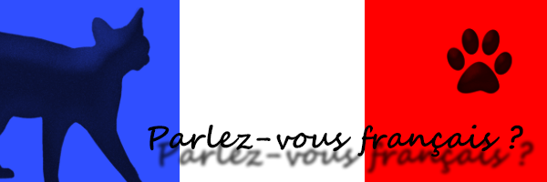
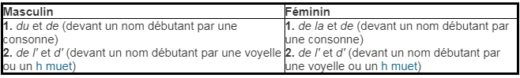
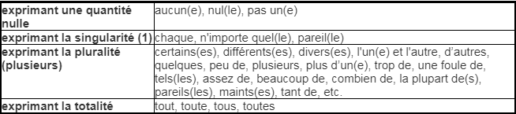
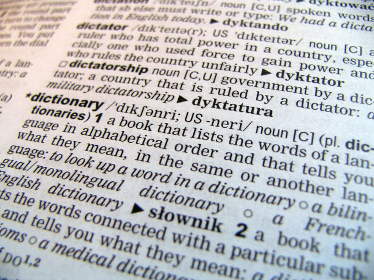
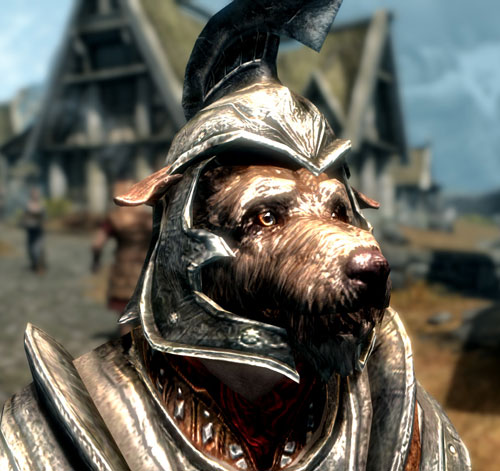

Leçons de français avec Ojazos
Mon Panini d'amour! Voici comme promis, un site web fait avec amour pour t'aider à apprendre le français. English please? As you know, french is a very difficult language, if not the most difficult. There are so many rules that I don't really know how to structure them. So I tried my best in gathering the basics to help you speak. We're not going into pure grammar and verbs and all that crap yet because as we both know, it is a nightmare. So I'm going to help you with basic sentences for conversation for when you travel and general cultural things you know... Oki? Then let's get started! Miao miao!
Note: Here is are a few links to a cool websites if you are not sure about something or I wasn't clear somewhere, you can go check it out, they both have exercices and they explain things very simply.
- This one I used when I was a french tutor, it's from the government and it's very good, top notch high class shit right there!: CCDMD
- This one is called Allô Prof and has help for elementary and high school subjects: Allô Prof
- This one is my least favourite one but still pretty good to learn: Français Facile
Sujets - Subjects
Let's start with the base of the base! This is something that you will need to know, at least to have a conversation. It is very often what starts a simple sentence. These are the pronouns you use for verbs.- Je - I
- Tu - You (Singular)
- Il/Elle/On - He/She - "On" is "us" but for some reason, it has the same conjugation as the third person. Not like "Nous - We. It is not like usted, I don't know how to translate it in english...
- Nous - We
- Vous - You (Plural)
- Ils/Elles - They in both feminine and masculine
Example 1 - Tutoyer
You meet with your cousin Nanako to go to the movies. Yu: Salut Nanako, comment vas-tu? (Or comment ça va is more common) Nanako: Bien et toi? Yu: Est-ce que tu sais quel film tu veux regarder? Nanako: Oui! Je veux regarder La légende des crevettes.Example 2 - Vouvoyer
Camilia goes to her doctor's appointment. Docteur Lopez: Bonjour Camilia, comment ça va aujourd'hui? Camilia: Je vais bien, merci Docteur Lopez. Et vous? * In this case, since it's a doctor, you say "Docteur" followed by their last name. In the case of a teacher or someone else, you use "Monsieur/Madame" and their last name. Madame Lopez. Docteur Lopez: Bien, merci. Que puis-je faire pour toi? Quelle est la raison de ta visite? Camilia: J'ai des douleurs au genou gauche depuis deux semaines et il est enflé. Pouvez-vous m'aider?Nouns
Proper nouns or names
This category groups all names of people, cities, countries, etc. They always start with a capital letter. Examples: Canada, Japan, Camilia, Nanako, Montréal
Common nouns
All the other names that are not proper nouns or names belong to the common nouns category. They are objects, adjectives, foods, etc. Examples: bicycle, park, restaurant, lobster, cat
Mini-test
This mini-test will test your skills in seeing the difference between the two main groups of nouns.Question 1
Just kidding... it's very easy and I'm sure you understand and it's the same in every language so there is no need to give you a test.Feminine and masculine and their articles
This maybe be one of the toughest to learn because it's mostly by memory. There aren't any rules to separate them. In french it's called "genre". Some names can be either feminine OR masculine, me, feminine AND masculine, meaning that they don't change spelling and can be used for both genres, or BOTH. Sometimes the words keep the same spelling by changing genre, sometimes they don't. Most of the times, you can know the difference by watching the article that precedes the name. Examples: Une pomme, une table, la chaise, la piscine, le cheval, un outil.Articles/les déterminants
To start, you surely know that the article is what introduces the noun in a sentence. You need to know the different articles (déterminant) because they will help you know if the following word is masculine or feminine. You will also use them in real life. Do not stress too much about this, it is by memory mostly and I've noticed that some words that are feminine in spanish and are similar in french are actually masculine in french like snake... Le serpent but in spanish it's la serpiente...so don't worry if you make mistakes in the beginning.
Just before we start please keep in mind to check the Allô Prof website I linked you in the beggining and check the "Déterminants" section because it has clearer tables of everything, examples and explanations and it also shows the contractions of each determinants because I have a feeling that if I try to explain them to you I'll just confuse you! It also has special rules and exeptions so please check it out, it's of upmost importance.
What you need to know first is that there are many different categories. Possessive, demonstrative, cardinal and ordinal for the numbers, for exclamations and interrogations, défini and indéfini and their contractions and this last category has subcategories as well. Help. We won't go too deep in this but I'll show you just enough to get the basics and when to use them.
Défini: So let's start with Défini. Le, La, L' (for words that start with vowels) and Les.This one is for general objects, for something we know about. I know you're probably confused with my explanation but you will understand in the next paragraph with the other type of article. Le poisson, la boîte de chocolats, l'abri, les bonbons.
Indéfini: Then you have Indéfini for the objects that are more vague. Un, Une, Des.Let's compare défini to indéfini. Un singe, le singe. A monkey, the monkey. When you say le singe it's "defined", we know that you are talking about a specific monkey. As for "un singe", it's vague. You could be talking about any monkey. In this category, you also have a lot more articles so please check the Allô Prof page for the whole package.
Démonstratif: Next we have Démonstratif to show something, to let the other person know what subject you are pointing at. Ce, cet (masculine as well but for a noun that starts with a vowel), cette, ces. Ce biscuit, cette voiture, cet employé, ces machines. You will also see sometimes "-là" with the - before it added to a word with Ce, ces, etc. It's just to specify even more that you are talking about that object over there.
Possessif: Possessif, pretty self explanatory. It's for something you own or someone else owns. Mon, Ma, Mes. Son, Sa, Ses. Ton, Ta, Tes. Notre, nos. Votre, vos. Leur, Leurs (their, theirs). Notre famille, Mon oreiller, Sa femme, Tes outils.
Interrogatif/Exclamatif: These are used for a question, an exclamation or an affirmative sentence where you are wondering about something. They can be at the start of a question or in the middle of a sentence. Quel, Quels, Quelle, Quelles. Which one. Quelle sera la température aujourd'hui? Quel est le nom de ton cousin? Je me demande quel repas préparer ce soir. Quel imbécile! Quelle belle journée! Mais quel пиздетс!!!
Partitif: This one is used for objects that you can't count. Water, flour, sugar. You can't say a sugar, a water. It's a mess so I'll just put an image. Du lait, de la farine, de l'eau.
Numéral: It's all the numbers basically. Un, deux, trois, dix-huit... Please check this link because it explains the rules on how to write them. Click here!
Quantitatif: As you can guess with the name, it is used to define quantitites. Plusieurs personnes, aucun élève, tous les jours. There are a lot of them so I'll link an image with most of them.
Relatif: This one is more rare but it is used to mention something that was already mentionned before in a previous sentence or even in the same sentence. Lequel, Laquelle, Lesquels, Lesquelles.There are a few others so if you're interested, please check the previous link of Allô Prof and check the "Déterminants Relatifs" link. But don't worry about it, it's not used often at all.
So there it is, most of them, there are a lot but if you can master them, you will have clear sentences and people will know what you are talking about. Therefore, don't worry too much about them, a lot of immigrants get them wrong especially with the genres of the words, feminine/masculine but it will impress a lot of people, including myself if you get them right!
Here is a little exercice for you at the bottom of the pageAnd here you have a little table of the most common articles and their genders.

Feminine and masculine
When a word is feminine OR masculine, it means it can only have one genre. It cannot be used for both genres. Example: La colombe (you cannot say LE colombe as the word is feminine only), un bateau (masculine only,never LA bateau). In the case of words that have both genres, they keep the same spelling so the only way to know if it's feminine or masculine is to watch the article that precedes. Example: Un journaliste, une journaliste. Un chef, une chef. In most cases, the spelling changes completely when the genre changes. You will also see that a lot of words only have the end of the word change. Some words only have one extra letter, some get a "è" followed by consonant and vowel and some have the last letters double and have an extra vowel at the end suchs as "a" or "e". Examples where the word changes completely: Le frère (brother) becomes la sœur(sister) and la vache (cow) becomes le taureau (bull) Example for the letter change: Un politicien, une politicienne. Un enseignant, une enseignante. Un écrivain, une écrivaine. Un berger, une bergère. Un cadet, une cadette.Feminine and masculine exercices - Can you tell the difference between a man and a female? What is the gender of these words?
- 1. Un/Une lion
- 2. Le/La autobus
- 3. Des chocolats
- 4. Un/Une bicyclette
- 5. Le/La maison
- 6. Les auteurs
Adjectives
Possessive adjectives
Demonstrative adjectives
Adjectives for qualities
****Never forget to make sure they're feminine or masculine.****Négations
****Ne pas, n'a pas, etc.**** À TERMINERHomophones
Homophones are words that sound similar and are written similarly but have different meanings. There are a lot so the only thing to do basically is to memorize them. There are some tricks for some of them, but looking through them all will make sure we'll still be studying homophones in the next two years... Here is a list of the main ones along with some tricks to memorize them.- A/À = This is one of the easiest to remember. "A" without accent is for the verb "avoir" (to have). "À" is used for saying for example "C'est à moi", "Je vais à la maison". So the trick to differentiate them is to replace the "A/À" with "Avait", which is the past of "avoir". If "Avait" makes sense in the sentence, then it's "A", if not, put "À".
- Ça/Sa = "Ça" is a demonstrative article, it means "this". "Sa" is a possessive article, it's "his/hers". Example : Sa poupée (her doll). Ça me fait rire (It makes me laugh). So to separate them, try using them in different sentences with possessive objects. If it's not possessive, use "Ça".
Test on homophones of hell
Choose between the two homophones in the parenthesis to complete the sentence.- 1.
- 2.
- 3. Je n'ai pas le temps d'aller (a/à) l'épicerie
Verbs
I won't enter in details with how to conjugate them because it's a nightmare. But I am giving you a list of the most commonly used verbs in everyday conversations so that you know at least what they mean and have a general idea of what the conversation is in case you don't understand everything.| Commonly used verbs | Verb in french | Translation |
|---|---|
| Être | To be |
| Avoir | To have |
| Aller | To go |
| Aimer | To love/like |
| Vouloir | To want |
| Manger | To eat |
| Dormir | To sleep |
| Faire | To do |
| Acheter | To buy |
| Demander | To ask |
Of course, there are a lot of verbs, link in any language. So I'll link a website with a very extensive list of verbs and their translation so you can look at them and try pronouncing them.
Click here for vuuuurrbbbs!!! Do not panic!Les jours de la semaine - Days of the week
- Lundi = Monday
- Mardi = Tuesday
- Mercredi = Wednesday
- Jeudi = Thursday
- Vendredi = Friday
- Samedi = Saturday
- Dimanche = Sunday
Les mois de l'année - Months of the year
- Janvier
- Février
- Mars
- Avril
- Mai
- Juin
- Juillet
- Août
- Septembre
- Octobre
- Novembre
- Décembre
Moments in time
These are the main moments in a whole year that you need to remember in order to have a normal conversation.- Jour = Day
- Journalier = Daily
- Semaine = Week
- Hebdomadaire = Weekly
- Mois = Month
- Mensuel = Monthly
- Trimestriel = Three months
- Semestriel = Six months
- Année = Year
- Annuel = Yearly
- Aujourd'hui = Today
- Demain = Tomorrow
- Après-demain = The day after tomorrow
- Hier = Yesterday
- Avant-hier = The day before yesterday
- Dans deux jours = In two days
- La semaine prochaine = Next week
- La semaine passée = Last week
Moments of the day
- Matinée = Early morning
- Matin = Morning
- Avant-midi = Morning just before noon
- Après-midi = Afternoon
- Soir = Evening
- Nuit = Night
Moments in general
Here are some words that you use to speak about a specific moment in time.- Maintenant = Now
- Après = After
- Avant = Before
- Tantôt = Later
- Plus tard = Later
- Plus tôt = Earlier
- Tout de suite = Now
- Immédiatement = Immediately
- Sur le champ = Immediately
Test on moments and time
Parlons un peu - Let's talk a bit
Here are some basic tips and sentences that you'll need to know for basic survival in a french speaking place. But DO NOT FORGET about "tutoyer" and "vouvoyer". In case you forgot or you need to refresh your memory, here it is!Salutations - Greetings part 1
Just like in every language, you have to start a conversation with a salutation to be polite. And end it with another salutation. Good day! In the case you just saw the person for the first time today, you can say the following to them to start a conversation or ask a question: Bonjour, bon matin. Both can be used to say good morning. On some occasions, you can use bonjour when taking your leave of someone, just like "bye". Example : "Merci de m'avoir aidé aujourd'hui! Bonjour!" This translates to "Thank you for having helped me today. Good day!" Saying "Bonjour" when taking your leave may sound weird to some people and it is used rarely so it is better to say "Bonne journée". "Jour" and "Journée" both mean day, so they both mean the same but because french, it is better to say "bonne journée" at the end of a conversation, it's just like "Have a nice day!" There aren't many words to start a conversation or to say hi so here they are. It's very basic.- Bonjour = Good morning and good day
- Bon matin = Good morning
- Salut = Hi, hey (salut is used more in a frendly context and is also used as bye)
- Allô = Hi (Allô is used on the phone to say hi. MOSHI MOSHI!!! Do not use it in real life. You can say it to friends in person, a bit like yo, hey, but it sounds kinda bland a sometimes even a bit rude to some people.)
De l'aide s'il-vous-plaît! - Help please!
Whether you're looking to buy something at a store, order a meal or asking for directions, you will need to ask for help from time to time. Here is a list of common sentences that you can use in different contexts. In the case of asking for help, to start the conversation, instead of the typical good day greeting, you can say "Excuse-moi" (to a young person, to someone you know that is not a superior or elder, etc.) or "Excusez-moi?", sorry or excuse me. "Pardon", "Pardonne/Pardonnez-moi". Once you got the person's attention, you can say what you have to say. Don't forget to say "s'il-vous-plaît", please, and thank them in the end. I'm going to separate the questions in their different context.Restaurants, bars, cafés
Here is a extensive but very useful list that will help you get some sexy food in a restaurant or a heart warming coffee or even a brain scrambling drink.- Bonjour, une table pour deux personnes, s'il-vous-plaît. = Hi, a table for two people, please.
- Quelle est la soupe du jour? = What is the soup of the day?
- Est-ce que je peux avoir de l'eau, s'il-vous-plaît? = May I have water, please?
- J'aimerais ma viande bien cuîte = I would like my meat well done
- When you don't know how to pronounce a meal on the menu, you can point to it and say: J'aimerais ceci = I would like this
- Est-ce que je peux avoir la carte des desserts, s'il-vous-plaît? = May I have the dessert menu, please?
- La facture, s'il-vous-plaît = The check, please. In France, you can say "addition" instead of facture, but in Québec, it is not really used. It's considered kind of dandy. They will understand but it's not common.
- C'est complet = It's complete. In countries where yoiu have to leave a tip, if you pay and your tip is covered, you can tell the waiter that it's complete so they don't have anything to give back to you. You can of course pay the exact sum and then leave tip after.
Magasins - Shops
We both know that shopping is annoying. But these french sentences will help you make this terrifying experience go smoothly. They will help you ask for prices, get rid of the annoying salesperson and purchase something. Usually, the salesperson will greet you with something like "Hi, how may I help you?" You can reply by either saying "leave me alone yo" or "oh yes I'm looking for a pair of red high heel shoes that could suit me for horse riding" Let's start with what to say when they offer you their help.- Je regarde, merci = I am looking, thanks
- Je sais ce que je veux déjà, merci = I know what I want already, thank you
- Je cherche un chandail noir = I am looking for a black shirt
- Avez-vous ceci dans la taille large? = Do you have this in size large?
- J'aimerais essayer ceci = I would like to try this
- Où sont les salles d'essayage? = Where are the fitting rooms?
- Combien coûte cette veste? = How much is this blazer?
- Quel est le prix de cet article? = What is the price of this article?
- Est-ce que c'est possible d'avoir un remboursement ou un échange? = Is it possible to have a refund or an exchange?
- Acceptez-vous crédit? = Do you accept credit?
- Est-ce que je peux avoir un sac, s'il-vous-plaît? = May I have a bag, please?
Directions - JE NE SAIS PAS OÙ JE DOIS ALLER!!! - BERRRRRRRRRRIIII!!!! NON!! BEAUDRY!!!!!
You can use the following words and questions to ask for help when you're looking for a particular place. As usual, you start by a greeting like "Excusez-moi" and then your question. Just don't forget to use polite words and always "vouvoyer" (ustedes) the other person if you don't know them. Vous. Always. Just before starting this section though, take a look here at the Common vocabulary and expressions section for a list of places and foods, coordinates, etc.- Bonjour! Je cherche (looking for) l'hôpital (or any other place)You can also add "le plus proche" which translates to "the closest in the case that you're looking for the closest thing and not a specific place.
- Savez-vous où est le Parc Lafontaine? - Do you know where is the Lafontaine Park?
- Par où je dois* aller pour trouver le café chat? -(To) Where do I have to go to find the cat café?
- Sur quelle rue se trouve l'épicerie? - On what street is the grocery store to be found? (I know it sounds really weird in english but in french it's very good.) You can also say "sur quelle rue est l'épicerie". Simpler, but I just wanted to give you more options that sound well in french.
- Quel bus dois-je* prendre pour me rendre au théâtre? - What bus do I have to take to get to the théâtre?
- Combien de temps à pied ça prend pour se rendre au centre d'achat? - How much time by foot does it take to get to the shopping center?
Greetings part 2 - Au revoir - Goodbye
These are words you can use to take your leave of someone.- À bientôt = See you soon
- À demain = See you tomorrow
- À la prochaine = Until next time.
- À plus tard = See you later
- Au revoir = Goodbye
- Bon après-midi = Good afternoon
- Bonne journée = Have a good day
- Bonsoir = Hello or Goodbye at night
Test on conversation skills
Common vocabulary and expressions
 Here you will have an attempt at an extensive list of words and expressions that you will hear and use on a daily basis. Work, food, animals, colors, holidyas, etc. I'll try to put it all!!! Well, all that I remember man.Fêtes - Holidays
When you want to wish someone a happy holiday, usually you use "Joyeux/Joyeuse" preceeding the name of the holiday while taking in account if it's feminine or masculine and singular or plural (go figure how that works, it's by memory again). You can alternatively say "Félicitations!" or even "Mes meilleurs voeux", which translates to "my best wishes". These last two expressions do not need to be followed by the name of the holiday.- Jour de l'an (masc. sing.) = New Year
- Saint-Valentin (fem. sing.) = Valentine's Day
- Pâques (fem. plur.) = Easter
- Anniversaire/Anniversaire de naissance (masc. sing.) = Birthday
- Anniversaire de marriage (masc. sing.) = Marriage anniversary
- Noël (masc. sing.) = Christmas
- Fête des mères/pères (fem. sing.) = Mother's/Father's Day
- Poisson d'Avril (masc. sing.) = April's Fool
Famille - Family
- (Grand --- Even if mère is a feminine noun, notice that "grand" stays masculine... I DON'T KNOW WHY MAN!)Mère/Maman = Mother
- (Grand)Père/Papa = Father
- (Petit/Grand)Frère = Brother
- (Petite/Grande --- see? it's feminine here...=_=)Soeur = Sister
- Tante = Aunt
- Oncle = Uncle
- Mari/Époux = Husband
- Femme/Épouse = Wife
- Petit-ami/Copain/Chum(QC only) = Boyfriend
- Petite-amie/Copine/Blonde(QC only, used even if the girl is not blonde, I never understood...) = Girlfriend
- Cousin/Cousine = Cousin
Transport and directions
- La voiture/Le véhicule - Car
- L'autobus/le bus - Bus of course...
- Le taxi
- L'avion - Airplane
- Le train
- Le métro - Subway
- Station de métro/de train/de bus/d'autobus
- Terminus - Last stop
- Le camion - Truck
- La bicyclette - Bike
- La moto
- Conducteur/Chauffeur - Driver
- Passager - Passenger
- Le bateau - Boat
- À droite - Right
- À gauche - Left
- En bas - A bajo
- En haut - Up
- Au Nord - To the north
- Au sud - To the south
- À l'ouest - To the west
- À l'est - To the east
La ville - The city
- La rue - The street
- Le quartier - The neighborhood
- La bâtisse - The building
- Café, restaurant, bar
- Transport en commun - Public transport
- Stationnement - Parking lot
- Station de ... (bus ou autobus, train, autocars)
- Parc - Park
- Magasin - Shop
- Garage/Mécanicien - Repair shop
- Centre d'achat - Shopping center
- Épicerie - Grocery store
Travail - Work
- Bureau - Office (also means table)
- Ordinateur - Computer
- Dossier - File
- Patron - Boss
- Équipe - Team
- Réunion - Meeting
- Tableau - Board, black or white
- Chaise - Chair
- Projecteur - Projecting machine
- Cahier de notes - Notebook
- Directeur - Director
- Gérant - Manager
- Secrétaire - Secretary
École - School
- École primaire/secondaire - Elementary school and high school
- Collège/Cégep (QC only) - Collège
- Université - University
- Enseignant/Enseignante - Teacher
- Professeur/Professeure - Professor - For both enseignant and professeur, you call them "Monsieur/Madame" followed by their last name and you always talk to them using "Vous"-Usted to be polite. Never use "Tu" for a teacher unless they say that you can.
- Étudiant/Étudiante - Student
- Note/Résultat - Grade (The result you get for a project like 92/100)
- Année - Grade year? ("En quelle année es-tu?" "Je suis en troisième anneé." - "What grade are you in?" "I am in third year."
- Classe/Cours/Scéance de cours - Class ("Cours" is used more often, because "classe" usually means more classroom.The French from France use "Classe" for both classroom and the lesson itself, like math class.)
- Devoir - Homework
- Projet - Project
- Travail - Work
- Travail de groupe/d'équipe - Teamwork
- Bureau - Desk (In a classroom. It can also mean office in other contexts, like the teacher's office - Bureau du professeur/de l'enseignant)
- Chaise - Chair
- Livre - Book
- Examen/Test - Test
- Manuel - Textbook
- Tableau - Board
- Craie - Chalk
- Matériel scolaire - School furniture
- Crayon - Pencil
- Efface/Gomme à effacer - Eraser
- Marqueur/Surligneur - Highlighter pen
- Stylo - Pen
- Feutre - Marker pen
- Papier - Paper
- Document - File (It is used for a project that has many pages or a file where you put your papers inside. For example, "Remettez-moi vos documents" means "Hand me your work/project" or the file itself.)
- Cours de récréation - Courtyard - Usually when children go out to play during breaks. So this word is only used for elementary schools usually.
- Cafétéria - Cafeteria
- Sac à dos - Backpack
- Étui à crayons - Pencil case
- Règle - Ruler
- Règlements - Rules
Animaux et insectes - Animals and insects - YOU PUNY INSECT!
- CHAT♥♥♥♥ - Cat♥
- Chien - Dog (THIS IS DOG)
- Cheval - Horse
- Poisson - Fish no matter if it's cooked or not :)
- Cochon/Porc - Pig
- Poulet - Chicken
- Vache/Boeuf - Cow/Beef
- Mouton - Lamb
- Oiseau - Bird
- Loup - Wolf
- Papillon - Butterfly. A fly with butter on the wings.
- Coccinelle (pronounced koxinel) - Ladybug
- Mouche - Fly
- Fourmi - Ant
Parties du corps - Body parts
- Tête - Head
- Visage - Face
- Front - Forehead
- Joue - Cheek
- Un oeil/Deux yeux - One eye/Two eyes
- Nez - Nose
- Bouche - Mouth
- Une dent/Plusieurs dents - One tooth/Many teeth
- Langue - Tongue
- Cou - Neck
- Gorge - Throat
- Torse/Poitrine - Torso/Chest
- Seins - Boobs/Breast
- Dos - Back
- Bras - One or two arms
- Main - Hand
- Doigt - Finger
- Jambe(s) - Leg(s)
- Pied(s) - Foot/Feet
- Orteil(s) - Toe(s)
- Muscles (pronounced muskl)- Muscles
Vêtements - Clothes
- Chandail - Shirt
- Pantalon - Pants
- Shorts - Shorts
- Chaussures/Souliers - Shoes
- Bottes - Boots
- Sandales - Sandals
- Chaussettes - Socks
- Sac à main - Handbag
- Chapeau - Hat
- Manteau - Warm coat
- Jacquette - Jacket, light coat
- Culottes - Panties for both sexes
- Soutien-Gorge - Bra - It doesn't make sense really, because "gorge" is throat, so it's a funny word.
Santé - Health
- En bonne/mauvaise santé - In good/bad health
- Sang - Blood
- Fièvre/Température - Fever
- Prise de poids - Weight gain
- Perte de poids - Weight loss
- Douleur - Pain
- Maladie - Disease
- Infection - Infection
- Crampes - Cramps
- Contagieux(se) - Contagious
- Virus - Virus
- Microbe/Bactérie - Bacteria
- Radiographie - X rays
- Prise de sang/Test sanguin - Blood test